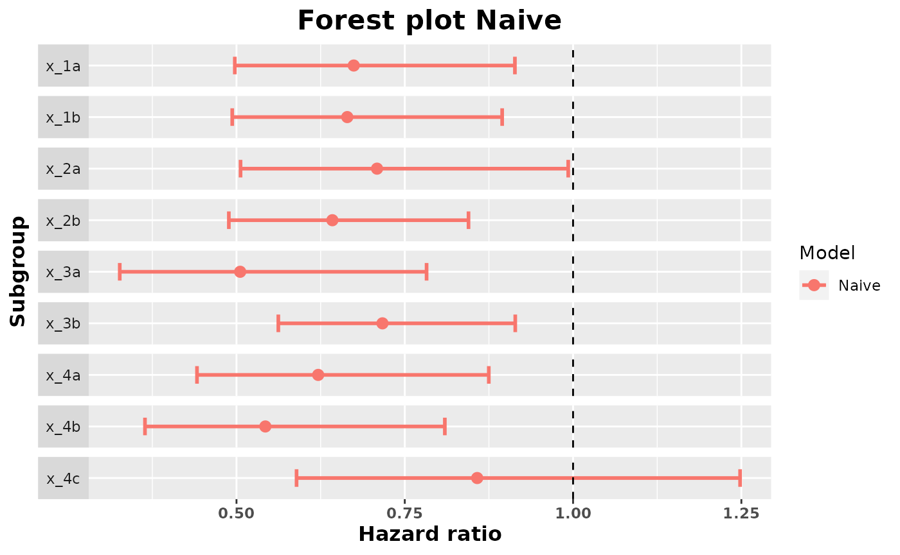
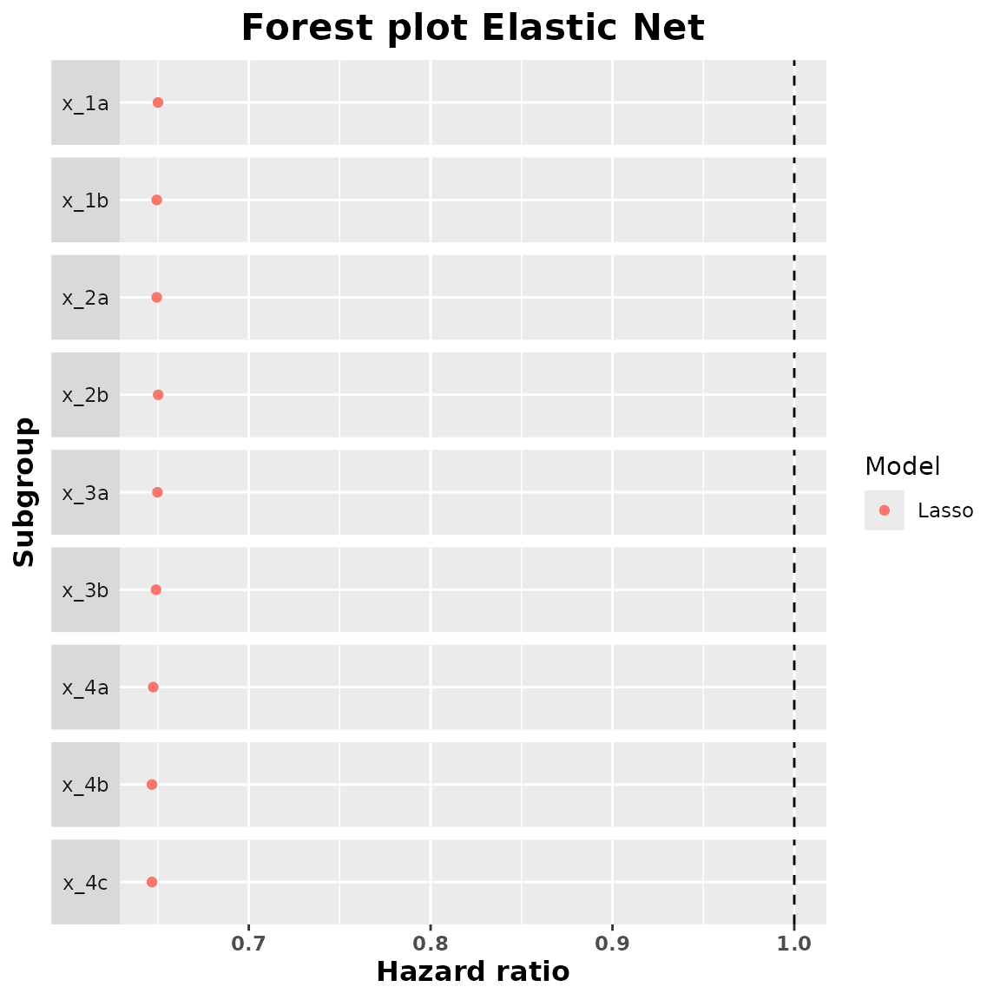
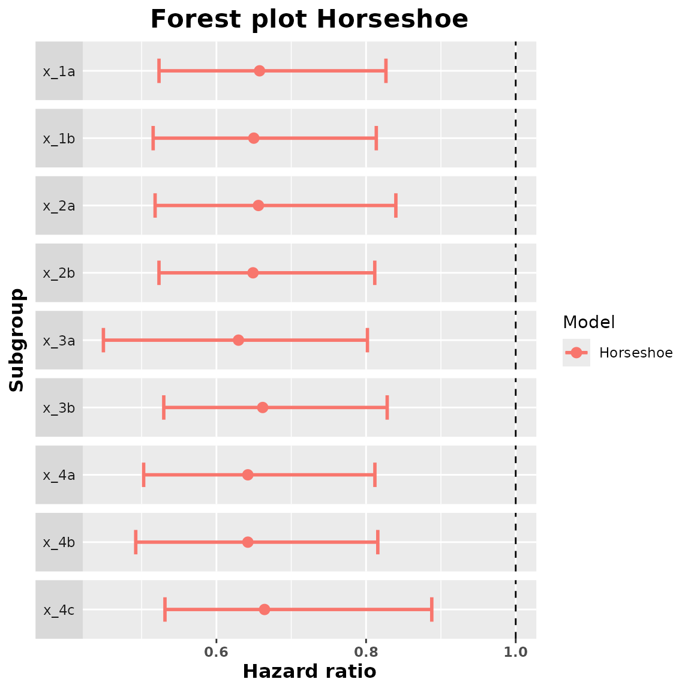
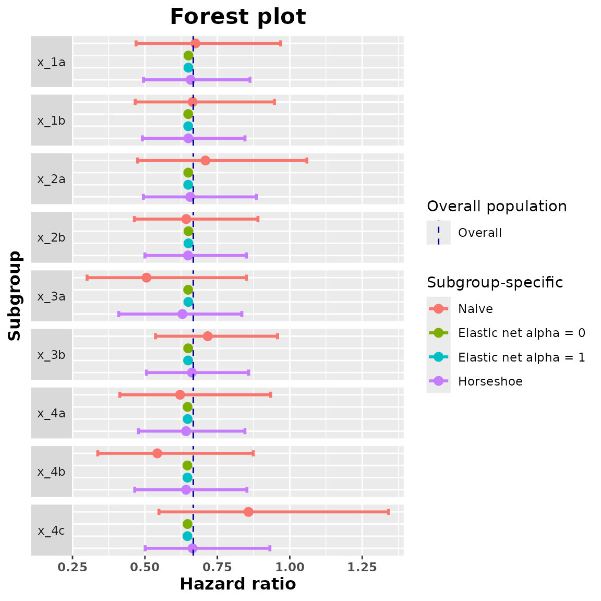

Introduction
In this vignette we are going to show with an example how to use this package.
We are going to consider a data set with time to event data and 10 categorical covariates. These categorical covariates define 25 subgroups. We are interested in estimating the subgroup treatment effect (in this case the subgroup hazard ratio) of each one of these 25 subgroups. To do so we are going to use all the methods available in this package and we are going to compare their results using a forest plot.
Data analysis
As it was mentioned before we are going to use survival data as an
example of how to use the package. In our data (that should be of class
data.frame) we should have columns with the following
variables:
Treatment: factor variable with two levels (the first level represents the control group and the second one the treatment group). It is important to make sure that this variable is a factor and that the levels are in the correct order.
Response: in the case of survival data this should be a numeric variable with the survival time.
Status: in the case of survival data this variable should be present and is a numeric variable with 0 and 1 indicating whether the observation was censored or not.
Categorical variables: factor variables with information about the individuals. The levels of these variables are going to be the subgroups that we are interested in studying.
In our case we have the following structure of the data:
str(example_data)
#> 'data.frame': 1000 obs. of 14 variables:
#> $ id : int 1 2 3 4 5 6 7 8 9 10 ...
#> $ arm : Factor w/ 2 levels "0","1": 1 1 1 1 2 2 2 2 2 1 ...
#> $ x_1 : Factor w/ 2 levels "a","b": 2 2 1 1 2 1 1 2 2 1 ...
#> $ x_2 : Factor w/ 2 levels "a","b": 1 2 1 1 1 2 2 1 2 2 ...
#> $ x_3 : Factor w/ 2 levels "a","b": 2 1 2 1 2 2 2 1 2 2 ...
#> $ x_4 : Factor w/ 3 levels "a","b","c": 2 1 3 3 3 3 3 1 3 3 ...
#> $ x_5 : Factor w/ 4 levels "a","b","c","d": 4 4 1 1 4 1 3 4 4 3 ...
#> $ x_6 : Factor w/ 2 levels "a","b": 2 1 2 2 2 1 2 2 2 2 ...
#> $ x_7 : Factor w/ 2 levels "a","b": 2 1 2 2 2 1 1 2 2 2 ...
#> $ x_8 : Factor w/ 3 levels "a","b","c": 3 2 1 3 3 3 1 1 2 3 ...
#> $ x_9 : Factor w/ 2 levels "a","b": 2 1 2 2 2 1 1 2 2 2 ...
#> $ x_10 : Factor w/ 3 levels "a","b","c": 3 3 3 3 3 1 2 2 2 3 ...
#> $ tt_pfs: num 0.9795 3.4762 1.7947 0.0197 2.2168 ...
#> $ ev_pfs: num 1 0 1 1 0 0 0 0 0 0 ...We have that arm is our treatment variable,
x_1 to x_10 are the categorical covariates,
tt_pfs is the response variable and ev_pfs is
the status variable.
Once that we are sure that our data is in the correct format and contains all the necessary variables, we are going to fit the different models in order to obtain the subgroup treatment effects.
Fit Models and Check Summary
Naivepop
Let’s start by fitting the model that will lead to an overall treatment effect estimation.
naivepop_model <- naivepop(resp = "tt_pfs", trt = "arm", data = example_data, resptype = "survival", status = "ev_pfs")This new naivepop object contains the fitted model, the
kind of model that was fitted, the response type of the data and the
data.
We can take the summary of this object to obtain the overall treatment effect estimate (in this case the overall hazard ratio).
summary_naivepop <- summary(naivepop_model)
summary_naivepop
#> arm1
#> 0.666919Naive
Now we are going to fit the model to obtain the naive
subgroup-specific treatment effects. We have to indicate which
categorical variables we want to consider to obtain the subgroup
treatment effects. If we add variable x_1 we are going to
obtain the subgroup treatment effect of the subgroups x_1a
and x_1b.
naive_model <- naive(
resp = "tt_pfs", trt = "arm",
subgr = c("x_1", "x_2", "x_3", "x_4"),
data = example_data, resptype = "survival",
status = "ev_pfs"
)This naive object contains the fitted models for each
one of the subgroups, the main information about the coefficients
associated to treatment of these fitted models, the kind of models
fitted, the response type and the data.
We can take the summary of this object to obtain the subgroup treatment effects. We can also include a value for the confidence level in order to obtain confidence intervals for these subgroup treatment effect estimates. By default this confidence level is of 95%.
summary_naive <- summary(naive_model, conf = 0.90)
summary_naive
#> subgroup trt.estimate trt.low trt.high
#> 1 x_1a 0.6741880 0.4975147 0.9135999
#> 2 x_1b 0.6645867 0.4936858 0.8946489
#> 3 x_2a 0.7087873 0.5060265 0.9927928
#> 4 x_2b 0.6424496 0.4886396 0.8446746
#> 5 x_3a 0.5054825 0.3265821 0.7823840
#> 6 x_3b 0.7168399 0.5621416 0.9141103
#> 7 x_4a 0.6213593 0.4413407 0.8748057
#> 8 x_4b 0.5428680 0.3640585 0.8095008
#> 9 x_4c 0.8575696 0.5892299 1.2481132We can add a forest plot with the estimated treatment effects:
plot(summary_naive)
Elastic Net
We are going to fit a model considering an elastic net penalization
on the subgroup treatment interaction coefficients. Depending on the
value of alpha we are going to have different kinds of
penalties. If we put alpha to 0 we consider a ridge penalty
and if we put alpha to 1 we consider a lasso penalty. We
are going to fit both lasso and ridge.
We have to add the covars argument which indicates which
categorical variables we want to include in our model. It is important
that all the variables that are in subgr are also in
covars. The idea is that we can include many variables but
then only find the subgroup treatment effect of some of them.
ridge_model <- elastic_net(
resp = "tt_pfs", trt = "arm",
subgr = c("x_1", "x_2", "x_3", "x_4"),
covars = c(
"x_1", "x_2", "x_3", "x_4", "x_5",
"x_6", "x_7", "x_8", "x_9", "x_10"
),
data = example_data, resptype = "survival",
alpha = 0, status = "ev_pfs"
)
lasso_model <- elastic_net(
resp = "tt_pfs", trt = "arm",
subgr = c("x_1", "x_2", "x_3", "x_4"),
covars = c(
"x_1", "x_2", "x_3", "x_4", "x_5",
"x_6", "x_7", "x_8", "x_9", "x_10"
),
data = example_data, resptype = "survival",
alpha = 1, status = "ev_pfs"
)These elastic_net models contain the fitted models, the
response type, the data, the value of alpha, the design and
the dummy matrices (that are later going to be used to obtain the
subgroup treatment effects), the response and status variables and the
names of the subgroups.
We are now going to obtain the summary of these fitted objects to find the subgroup hazard ratio estimates.
summary_ridge <- summary(ridge_model)
summary_ridge
#> subgroup trt.estimate
#> 1 x_1a 0.6514162
#> 2 x_1b 0.6494716
#> 3 x_2a 0.6511461
#> 4 x_2b 0.6501897
#> 5 x_3a 0.6413243
#> 6 x_3b 0.6523088
#> 7 x_4a 0.6449626
#> 8 x_4b 0.6449838
#> 9 x_4c 0.6530015
summary_lasso <- summary(lasso_model)
summary_lasso
#> subgroup trt.estimate
#> 1 x_1a 0.6500483
#> 2 x_1b 0.6493824
#> 3 x_2a 0.6493749
#> 4 x_2b 0.6501893
#> 5 x_3a 0.6497598
#> 6 x_3b 0.6489794
#> 7 x_4a 0.6474298
#> 8 x_4b 0.6467309
#> 9 x_4c 0.6467375We can obtain a forest plot for each one of these fitted models:
plot(summary_ridge)
plot(summary_lasso)
Horseshoe model
We are now going to fit a Bayesian model with a horseshoe prior on
the subgroup-treatment interactions. Fitting this kind of models usually
takes a bit of time. We can modify some parameters like the number of
Markov chains, the number of iterations or the number of warmup
iterations (between others). The parameters that we can change are found
in the documentation of the brm function from the brms
package.
horseshoe_model <- horseshoe(
resp = "tt_pfs", trt = "arm",
subgr = c("x_1", "x_2", "x_3", "x_4"),
covars = c(
"x_1", "x_2", "x_3", "x_4", "x_5",
"x_6", "x_7", "x_8", "x_9", "x_10"
),
data = example_data, resptype = "survival",
status = "ev_pfs", chains = 2, seed = 0,
control = list(adapt_delta = 0.95)
)
#> Compiling Stan program...
#> Trying to compile a simple C file
#> Running /usr/local/lib/R/bin/R CMD SHLIB foo.c
#> gcc -I"/usr/local/lib/R/include" -DNDEBUG -I"/usr/local/lib/R/site-library/Rcpp/include/" -I"/usr/local/lib/R/site-library/RcppEigen/include/" -I"/usr/local/lib/R/site-library/RcppEigen/include/unsupported" -I"/usr/local/lib/R/site-library/BH/include" -I"/usr/local/lib/R/site-library/StanHeaders/include/src/" -I"/usr/local/lib/R/site-library/StanHeaders/include/" -I"/usr/local/lib/R/site-library/RcppParallel/include/" -I"/usr/local/lib/R/site-library/rstan/include" -DEIGEN_NO_DEBUG -DBOOST_DISABLE_ASSERTS -DBOOST_PENDING_INTEGER_LOG2_HPP -DSTAN_THREADS -DBOOST_NO_AUTO_PTR -include '/usr/local/lib/R/site-library/StanHeaders/include/stan/math/prim/mat/fun/Eigen.hpp' -D_REENTRANT -DRCPP_PARALLEL_USE_TBB=1 -I/usr/local/include -fpic -g -O2 -fstack-protector-strong -Wformat -Werror=format-security -Wdate-time -D_FORTIFY_SOURCE=2 -g -c foo.c -o foo.o
#> In file included from /usr/local/lib/R/site-library/RcppEigen/include/Eigen/Core:88,
#> from /usr/local/lib/R/site-library/RcppEigen/include/Eigen/Dense:1,
#> from /usr/local/lib/R/site-library/StanHeaders/include/stan/math/prim/mat/fun/Eigen.hpp:13,
#> from <command-line>:
#> /usr/local/lib/R/site-library/RcppEigen/include/Eigen/src/Core/util/Macros.h:628:1: error: unknown type name ‘namespace’
#> 628 | namespace Eigen {
#> | ^~~~~~~~~
#> /usr/local/lib/R/site-library/RcppEigen/include/Eigen/src/Core/util/Macros.h:628:17: error: expected ‘=’, ‘,’, ‘;’, ‘asm’ or ‘__attribute__’ before ‘{’ token
#> 628 | namespace Eigen {
#> | ^
#> In file included from /usr/local/lib/R/site-library/RcppEigen/include/Eigen/Dense:1,
#> from /usr/local/lib/R/site-library/StanHeaders/include/stan/math/prim/mat/fun/Eigen.hpp:13,
#> from <command-line>:
#> /usr/local/lib/R/site-library/RcppEigen/include/Eigen/Core:96:10: fatal error: complex: No such file or directory
#> 96 | #include <complex>
#> | ^~~~~~~~~
#> compilation terminated.
#> make: *** [/usr/local/lib/R/etc/Makeconf:169: foo.o] Error 1
#> Start sampling
#>
#> SAMPLING FOR MODEL '4c88d91c9772512e42eae9279bcb6c67' NOW (CHAIN 1).
#> Chain 1:
#> Chain 1: Gradient evaluation took 0.001074 seconds
#> Chain 1: 1000 transitions using 10 leapfrog steps per transition would take 10.74 seconds.
#> Chain 1: Adjust your expectations accordingly!
#> Chain 1:
#> Chain 1:
#> Chain 1: Iteration: 1 / 2000 [ 0%] (Warmup)
#> Chain 1: Iteration: 200 / 2000 [ 10%] (Warmup)
#> Chain 1: Iteration: 400 / 2000 [ 20%] (Warmup)
#> Chain 1: Iteration: 600 / 2000 [ 30%] (Warmup)
#> Chain 1: Iteration: 800 / 2000 [ 40%] (Warmup)
#> Chain 1: Iteration: 1000 / 2000 [ 50%] (Warmup)
#> Chain 1: Iteration: 1001 / 2000 [ 50%] (Sampling)
#> Chain 1: Iteration: 1200 / 2000 [ 60%] (Sampling)
#> Chain 1: Iteration: 1400 / 2000 [ 70%] (Sampling)
#> Chain 1: Iteration: 1600 / 2000 [ 80%] (Sampling)
#> Chain 1: Iteration: 1800 / 2000 [ 90%] (Sampling)
#> Chain 1: Iteration: 2000 / 2000 [100%] (Sampling)
#> Chain 1:
#> Chain 1: Elapsed Time: 48.4292 seconds (Warm-up)
#> Chain 1: 46.2427 seconds (Sampling)
#> Chain 1: 94.6719 seconds (Total)
#> Chain 1:
#>
#> SAMPLING FOR MODEL '4c88d91c9772512e42eae9279bcb6c67' NOW (CHAIN 2).
#> Chain 2:
#> Chain 2: Gradient evaluation took 0.000569 seconds
#> Chain 2: 1000 transitions using 10 leapfrog steps per transition would take 5.69 seconds.
#> Chain 2: Adjust your expectations accordingly!
#> Chain 2:
#> Chain 2:
#> Chain 2: Iteration: 1 / 2000 [ 0%] (Warmup)
#> Chain 2: Iteration: 200 / 2000 [ 10%] (Warmup)
#> Chain 2: Iteration: 400 / 2000 [ 20%] (Warmup)
#> Chain 2: Iteration: 600 / 2000 [ 30%] (Warmup)
#> Chain 2: Iteration: 800 / 2000 [ 40%] (Warmup)
#> Chain 2: Iteration: 1000 / 2000 [ 50%] (Warmup)
#> Chain 2: Iteration: 1001 / 2000 [ 50%] (Sampling)
#> Chain 2: Iteration: 1200 / 2000 [ 60%] (Sampling)
#> Chain 2: Iteration: 1400 / 2000 [ 70%] (Sampling)
#> Chain 2: Iteration: 1600 / 2000 [ 80%] (Sampling)
#> Chain 2: Iteration: 1800 / 2000 [ 90%] (Sampling)
#> Chain 2: Iteration: 2000 / 2000 [100%] (Sampling)
#> Chain 2:
#> Chain 2: Elapsed Time: 47.5964 seconds (Warm-up)
#> Chain 2: 32.5793 seconds (Sampling)
#> Chain 2: 80.1756 seconds (Total)
#> Chain 2:
#> Warning: There were 3 divergent transitions after warmup. See
#> https://mc-stan.org/misc/warnings.html#divergent-transitions-after-warmup
#> to find out why this is a problem and how to eliminate them.
#> Warning: Examine the pairs() plot to diagnose sampling problemsOnce that the model is fitted we have to check if there are convergence problems. In this case we obtained 3 divergent transitions after warmup. In general if there are few divergent transitions (taking into account the total number of iterations, in this case 2000 after warmup) and there are no other problems like high Rhats we can continue with our analysis. This is what happens in our example: we have 3 divergent transitions after warmup out of 2000 and there are no other problems.
We can obtain a summary of the posterior distributions of the coefficients of the fitted model:
horseshoe_model$fit
#> Warning: There were 3 divergent transitions after warmup. Increasing
#> adapt_delta above 0.95 may help. See
#> http://mc-stan.org/misc/warnings.html#divergent-transitions-after-warmup
#> Family: cox
#> Links: mu = log
#> Formula: tt_pfs | cens(1 - ev_pfs) ~ a + b
#> a ~ 0 + arm0 + arm1 + x_1b + x_2b + x_3b + x_4b + x_4c + x_5b + x_5c + x_5d + x_6b + x_7b + x_8b + x_8c + x_9b + x_10b + x_10c
#> b ~ 0 + x_1a_arm + x_1b_arm + x_2a_arm + x_2b_arm + x_3a_arm + x_3b_arm + x_4a_arm + x_4b_arm + x_4c_arm + x_5a_arm + x_5b_arm + x_5c_arm + x_5d_arm + x_6a_arm + x_6b_arm + x_7a_arm + x_7b_arm + x_8a_arm + x_8b_arm + x_8c_arm + x_9a_arm + x_9b_arm + x_10a_arm + x_10b_arm + x_10c_arm
#> Data: data_model (Number of observations: 1000)
#> Draws: 2 chains, each with iter = 2000; warmup = 1000; thin = 1;
#> total post-warmup draws = 2000
#>
#> Population-Level Effects:
#> Estimate Est.Error l-95% CI u-95% CI Rhat Bulk_ESS Tail_ESS
#> a_arm0 -0.29 0.36 -0.98 0.42 1.00 963 1113
#> a_arm1 -0.80 0.47 -1.79 0.09 1.00 916 905
#> a_x_1b -0.07 0.14 -0.34 0.20 1.00 2235 1561
#> a_x_2b 0.06 0.15 -0.21 0.36 1.00 2227 1009
#> a_x_3b -0.30 0.17 -0.63 0.01 1.00 1696 1437
#> a_x_4b -0.26 0.16 -0.59 0.06 1.00 1427 927
#> a_x_4c -0.56 0.17 -0.90 -0.23 1.00 1797 1334
#> a_x_5b 0.02 0.27 -0.49 0.56 1.00 1239 1439
#> a_x_5c -0.15 0.22 -0.59 0.32 1.00 1003 843
#> a_x_5d -0.24 0.21 -0.62 0.22 1.00 980 964
#> a_x_6b 0.20 0.15 -0.07 0.52 1.00 1973 1337
#> a_x_7b 0.07 0.16 -0.27 0.37 1.00 1779 1499
#> a_x_8b 0.01 0.19 -0.39 0.38 1.00 1701 1533
#> a_x_8c -0.00 0.19 -0.37 0.35 1.00 1496 1440
#> a_x_9b 0.08 0.18 -0.28 0.44 1.00 1397 1109
#> a_x_10b 0.18 0.20 -0.18 0.57 1.00 1375 1453
#> a_x_10c 0.16 0.19 -0.21 0.54 1.00 1231 1270
#> b_x_1a_arm 0.00 0.09 -0.19 0.21 1.00 1687 1171
#> b_x_1b_arm -0.01 0.09 -0.22 0.16 1.00 1892 1765
#> b_x_2a_arm 0.01 0.10 -0.16 0.25 1.00 1909 1576
#> b_x_2b_arm -0.01 0.10 -0.27 0.18 1.00 1565 1182
#> b_x_3a_arm -0.05 0.14 -0.46 0.11 1.00 1219 991
#> b_x_3b_arm 0.04 0.15 -0.13 0.51 1.00 1336 1151
#> b_x_4a_arm -0.01 0.13 -0.26 0.17 1.00 1493 969
#> b_x_4b_arm -0.02 0.13 -0.34 0.17 1.00 1484 1058
#> b_x_4c_arm 0.05 0.16 -0.10 0.45 1.00 1142 958
#> b_x_5a_arm 0.09 0.21 -0.08 0.76 1.00 922 932
#> b_x_5b_arm -0.07 0.20 -0.73 0.10 1.00 1330 1481
#> b_x_5c_arm -0.01 0.09 -0.25 0.14 1.00 2554 1606
#> b_x_5d_arm 0.01 0.09 -0.14 0.23 1.00 2023 1711
#> b_x_6a_arm 0.03 0.11 -0.12 0.36 1.00 1388 1005
#> b_x_6b_arm -0.02 0.11 -0.30 0.14 1.00 1499 888
#> b_x_7a_arm -0.06 0.16 -0.56 0.11 1.00 1433 1450
#> b_x_7b_arm 0.05 0.14 -0.09 0.48 1.00 1311 1543
#> b_x_8a_arm -0.02 0.12 -0.37 0.13 1.00 1891 1317
#> b_x_8b_arm -0.02 0.11 -0.33 0.14 1.00 2060 1664
#> b_x_8c_arm 0.04 0.13 -0.09 0.43 1.01 1551 1559
#> b_x_9a_arm -0.04 0.15 -0.48 0.11 1.00 1336 1454
#> b_x_9b_arm 0.04 0.15 -0.12 0.48 1.00 1917 1222
#> b_x_10a_arm 0.00 0.10 -0.21 0.23 1.00 1884 1550
#> b_x_10b_arm 0.01 0.10 -0.16 0.27 1.00 2010 1365
#> b_x_10c_arm -0.02 0.09 -0.28 0.14 1.00 1974 1736
#>
#> Draws were sampled using sampling(NUTS). For each parameter, Bulk_ESS
#> and Tail_ESS are effective sample size measures, and Rhat is the potential
#> scale reduction factor on split chains (at convergence, Rhat = 1).Apart from the fitted model this horseshoe object also
contains the data, the response, the design and dummy matrices, the kind
of response and the subgroup names.
We are now going to call summary of this object to obtain the subgroup hazard ratio estimates. With this summary we are also going to obtain the samples of the approximate posterior distribution of the subgroup hazard ratios. The estimates are just the median of this approximate posterior distribution. We should select a confidence level in order to obtain credible intervals for the subgroup treatment effects. The default confidence level is 95%.
summary_horseshoe <- summary(horseshoe_model, conf = 0.9)
summary_horseshoe
#> subgroup trt.estimate trt.low trt.high
#> 1 x_1a 0.6592278 0.5242579 0.8175955
#> 2 x_1b 0.6520480 0.5176570 0.8047114
#> 3 x_2a 0.6589804 0.5256111 0.8302599
#> 4 x_2b 0.6543356 0.5208846 0.8019683
#> 5 x_3a 0.6266290 0.4371677 0.7901107
#> 6 x_3b 0.6656145 0.5321776 0.8219393
#> 7 x_4a 0.6399664 0.4974540 0.8018384
#> 8 x_4b 0.6455010 0.4870914 0.8038556
#> 9 x_4c 0.6707361 0.5306578 0.8813829We can obtain a forest plot with the treatment effect estimates and the credible intervals.
plot(summary_horseshoe)
Comparison of the Methods
A last useful thing that we can do is to compare the different treatment effect estimates. For that we are first going to generate a data set with all the estimated hazard ratios and then we are going to plot all of them in a common forest plot.
comparison_data <- compare(naivepop_model, naive_model, ridge_model, lasso_model, horseshoe_model)
comparison_data
#> $data
#> subgroup trt.estimate trt.low trt.high model
#> 1 x_1a 0.6741880 0.4693783 0.9683648 Naive
#> 2 x_1b 0.6645867 0.4663568 0.9470762 Naive
#> 3 x_2a 0.7087873 0.4743926 1.0589952 Naive
#> 4 x_2b 0.6424496 0.4636818 0.8901394 Naive
#> 5 x_3a 0.5054825 0.3003642 0.8506759 Naive
#> 6 x_3b 0.7168399 0.5365623 0.9576884 Naive
#> 7 x_4a 0.6213593 0.4133445 0.9340571 Naive
#> 8 x_4b 0.5428680 0.3372320 0.8738959 Naive
#> 9 x_4c 0.8575696 0.5483543 1.3411505 Naive
#> 10 x_1a 0.6514162 0.6514162 0.6514162 Elastic net alpha = 0
#> 11 x_1b 0.6494716 0.6494716 0.6494716 Elastic net alpha = 0
#> 12 x_2a 0.6511461 0.6511461 0.6511461 Elastic net alpha = 0
#> 13 x_2b 0.6501897 0.6501897 0.6501897 Elastic net alpha = 0
#> 14 x_3a 0.6413243 0.6413243 0.6413243 Elastic net alpha = 0
#> 15 x_3b 0.6523088 0.6523088 0.6523088 Elastic net alpha = 0
#> 16 x_4a 0.6449626 0.6449626 0.6449626 Elastic net alpha = 0
#> 17 x_4b 0.6449838 0.6449838 0.6449838 Elastic net alpha = 0
#> 18 x_4c 0.6530015 0.6530015 0.6530015 Elastic net alpha = 0
#> 19 x_1a 0.6500483 0.6500483 0.6500483 Elastic net alpha = 1
#> 20 x_1b 0.6493824 0.6493824 0.6493824 Elastic net alpha = 1
#> 21 x_2a 0.6493749 0.6493749 0.6493749 Elastic net alpha = 1
#> 22 x_2b 0.6501893 0.6501893 0.6501893 Elastic net alpha = 1
#> 23 x_3a 0.6497598 0.6497598 0.6497598 Elastic net alpha = 1
#> 24 x_3b 0.6489794 0.6489794 0.6489794 Elastic net alpha = 1
#> 25 x_4a 0.6474298 0.6474298 0.6474298 Elastic net alpha = 1
#> 26 x_4b 0.6467309 0.6467309 0.6467309 Elastic net alpha = 1
#> 27 x_4c 0.6467375 0.6467375 0.6467375 Elastic net alpha = 1
#> 28 x_1a 0.6592278 0.4998014 0.8495904 Horseshoe
#> 29 x_1b 0.6520480 0.4956804 0.8415354 Horseshoe
#> 30 x_2a 0.6589804 0.5017134 0.8616587 Horseshoe
#> 31 x_2b 0.6543356 0.4964563 0.8445172 Horseshoe
#> 32 x_3a 0.6266290 0.4021923 0.8272290 Horseshoe
#> 33 x_3b 0.6656145 0.5055671 0.8632291 Horseshoe
#> 34 x_4a 0.6399664 0.4788171 0.8475966 Horseshoe
#> 35 x_4b 0.6455010 0.4591092 0.8449147 Horseshoe
#> 36 x_4c 0.6707361 0.5055804 0.9424651 Horseshoe
#>
#> $overall_trt
#> [1] 0.666919
#>
#> $resptype
#> [1] "survival"
#>
#> attr(,"class")
#> [1] "compare.data"Now we plot all the estimated subgroup hazard ratios and we add a vertical line indicating the value of the overall hazard ratio.
plot(comparison_data)
In the case of having survival data the procedure would be analogous
but instead of having survival resptype we would have
binary. Also the response variable should be a numeric variable with 1
and 0 and there would be no status variable.